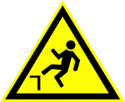
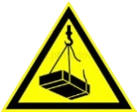
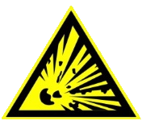

ВАЖНО
ОПИСАНИЕ СИМВОЛОВ
|  | Опасность падения |

|
Важные предупреждающие сообщения, способствующие предотвращению травм и значительного ущерба |
|  | Предостережение о наличии подвешенного груза |
|  | Предостережение об опасности возникновения взрыва |

|
Предостережение о наличии электрического напряжения |
ОПИСАНИЕ
Область применения
Нории предназначены для транспортировки сыпучих зерновых продуктов по вертикали непрерывным пульсирующим потоком с помощью большого числа ковшей, которые закреплены с периодическим интервалом на бесконечной ленте. Любое другое использование считается не соответствующим предназначению.
Использование согласно предписанию включает в себя также:
- Соблюдение указанных изготовителем условий ввода в эксплуатацию, эксплуатации и технического ухода, указанных в руководстве по эксплуатации
- Учет предвидимых ошибочных действий
- Использование исключительно специалистами, знающими правила обслуживания и возможные опасности
Любое другое выходящее за эти рамки использование считается не соответствующим предписанию. Изготовитель не несет ответственности за возникший в результате этого ущерб.
ТЕХНИКА БЕЗОПАСНОСТИ
Указания по технике безопасности в работе
- Перед установкой, эксплуатацией, работами по техническому обслуживанию или ремонту нории пользователь, работающий с устройством, должен прочитать и усвоить содержание руководства по эксплуатации.
- Необходимо определить конкретную ответственность за монтаж, эксплуатацию, техническое обслуживание и ремонт транспортера и строго придерживаться ее.
- При монтаже и эксплуатации нории необходимо соблюдать действующие на местах законы и предписания.
- При транспортировке и установке необходимо соблюдать действующие на местах предписания по технике безопасности.
- ЗАПРЕЩЕНО превышать допустимую грузоподъемность транспортных средств и подъемных приспособлений.
- ЗАПРЕЩЕНО производить изменения предусмотренных вспомогательных конструкций для монтажа, а также чрезмерно перегружать их.
- Для конструкций подпорок и зданий, предоставленных лицом эксплуатирующим оборудование, для установки ему необходимо представить свидетельства об их устойчивости.
- Перед первым введением в эксплуатацию необходимо установить все защитные приспособления и проверить их работоспособность.
- Для надежности эксплуатации необходимо обеспечить проведение предписанных работ по техническому обслуживанию и техническому уходу.
- Нории типа ZEO-BE необходимо использовать только по назначению. Любое другое, выходящее за эти рамки использование считается не соответствующим предназначению. За возникший в результате этого ущерб несет ответственность только пользователь.
- Все работы по электротехнике разрешается проводить только квалифицированным специалистам электротехникам.
- Работы по эксплуатации, техническому обслуживанию и техническому уходу разрешается проводить только квалифицированным специалистам. Если нет такой возможности, то необходимо привлечь службу сервиса изготовителя.
- Гарантийные обязательства изготовителя определяются условиями контракта. Эти обязательства не дополняются и не сокращаются указаниями по технике безопасности.
- Категорически ЗАПРЕЩЕНО производить ремонт во время работы нории.
- Категорически ЗАПРЕЩЕНО эксплуатировать норию без заземления.
- Категорически ЗАПРЕЩЕНО производить смазку, регулировку и т.д. при включенном двигателе.
Устройство и принцип работы
Принцип действия и основные узлы
Норийная лента с ковшами проходит над барабанами в нижней и верхней частях нории. Верхний барабан приводной, а нижний — натяжной. Лента является средством перемещения и натяжения. Большей частью восходящая и нисходящая части ленты проходят в трубе — отдельно или вместе. Труба устанавливается на башмаке нории, и на ней монтируется головка нории.
Башмак нории оборудован одним или двумя питающими носками. Головка нории заканчивается разгрузочным носком, который направляет поток выгружаемого продукта. Продукт выгружается самотеком или под действием центробежной силы. Метод загрузки ковшей внизу и выгрузки продукта в верхней части в значительной мере влияет на производительность нории.
Загрузка ковшей
Нория имеет две стороны загрузки: прямая и обратная (рис.1). Прямая загрузка производит загрузку зерна, полностью выполняя требования по производительности для данной нории.
Конструкция нории
Основными частями стандартной нории являются головка, башмак и соединяющие их норийные трубы. Внутренние поверхности этих узлов нории должны быть гладкими и ровными без каких-либо выступающих частей или других неровностей, которые могут затруднить прохождение потока зерна.
Головка нории
Верхняя часть элеватора собрана болтами и обычно поставляется с установленным справа редуктором с полым валом и устройством, предотвращающим обратный ход. Также может поставляться с непосредственно установленным редуктором. Зерно перемещается при помощи пластины по изгибу верхней части к выпускному отверстию. Выпускной желоб с горизонтальным подсоединением к фланцу. Приводной барабан футерован фрикционным материалом, обеспечивая высокий коэффициент сцепления с лентой.
Особенности:
- Внутренняя обшивка из износостойкого материала по желанию заказчика;
- Универсальность крепления привода (возможность переустановки привода без переделок);
- Наличие полноразмерных смотровых лючков;
- Регулируемый шибер от просыпи продукта;
- Самонесущая конструкция головки не требует устройства рамы под привод;
- Возможность регулировки производительности с помощью частотного преобразователя по желанию заказчика;
- Разделенный кожух для облегчения монтажа и обслуживания;
- Легко заменяемые быстроизнашивающиеся листы;
- Люки на выбросе для чистки и инспекций;
- Применение импортных типов приводов на нориях разной производительности позволяет уменьшить энергозатраты;
- При установке полимерных ковшей лучше сохраняются качества зерна и семян, экономится энергия в процессе эксплуатации на 20% в результате снижения веса ковшей, удлиняется срок эксплуатации и обеспечивается низкий коэффициент трения.
Подобно ленточному конвейеру нория имеет приводной и натяжной барабаны. Функции барабанов — приводить в движение норийную ленту, направлять или контролировать ее перемещение и передавать энергию норийной ленте от электродвигателя за счет трения.
Преимущество резиновой футеровки состоит в том, что норийные болты и барабан не находятся в непосредственном контакте, нагруженная лента не перемещается в обратном направлении при остановке и внутренняя сторона ленты меньше изнашивается.
В зерновых нориях маловероятно, что коэффициент трения между норийной лентой и барабаном будет уменьшаться вследствие увлажнения, однако из-за высокой концентрации пыли возможно проскальзывание ленты. Это предотвращают соответствующим натяжением ленты незагруженной нории.
Это зерно необходимо повторно транспортировать, что снижает производительность нории. Данное явление должно быть предотвращено установкой регулируемой заслонки по возможности ближе к кромке ковшей так, чтобы она не касалась ковшей.
Башмак нории
Башмак нории - это конструкция, собранная болтами. Обычно башмак оборудован загрузочным патрубком под углом 45° и подсоединением к фланцу. Загрузочное устройство обычно расположено на передней части нории (где ковши перемещаются вверх). При таком расположении потребление энергии наименьшее. Для легковесных продуктов рационально разместить загрузочное устройство в задней части нории. Натяжение ремня осуществляется в башмаке нории вручную, при помощи двух натяжных винтов.
Особенности:
- Внутренняя обшивка из износостойкого материала по желанию заказчика;
- Наличие полноразмерных смотровых лючков;
- Разделенный кожух для облегчения монтажа и обслуживания;
- Легко заменяемые быстроизнашивающиеся листы;
- Башмак нории оборудован откидным шибером для очистки.
Питающий носок устанавливают так, чтобы ковши зачерпывали продукт выше оси нижнего барабана. На рисунке показан башмак нории с комбинированной загрузкой. Если питающий носок расположен слишком низко, как показано на рисунке, то часть продукта не зачерпывается ковшами, что может вызвать заклинивание.
Нижний барабан обеспечивает вращение ленты и ее натяжение. Рекомендуется использовать стальные сварные барабаны с выпуклой поверхностью. Обечайка нижнего барабана может быть закрытой или типа самоочищающейся клетки. Иногда стальной барабан может быть решетчатой конструкции из планок. Такая конструкция имеет преимущество в том, что зерно, попавшее между лентой и обечайкой барабана, может просыпаться. Недостаток ее — многоугольный корпус, состоящий из ряда узких поверхностей, которые ускоряют износ ленты и деформируют головки норийных болтов.
при загрузке ковшей против хода норийной ленты.
Норийные трубы
Конструкцией норийной трубы предусмотрена установка смотровых люков, с целью проведения инспекций и возможности контроля работы транспортера.
Установка взрыворазрядных устройств на нориях необходима для защиты от разрушения, для предотвращения распространения пламени и продуктов взрывного горения, пылевоздушной смеси.
Взрыворазрядное устройство состоит из предохранительной мембраны или откидного клапана, отводящего трубопровода, а при необходимости и из огнепреграждающего устройства.
а – одна или общая труба; б – сдвоенная труба;
в – две раздельные круглые трубы.
Использование приводных барабанов меньшего диаметра с большими лентами побудило применять на высокопроизводительных нориях одну норийную трубу. Преимущество одной трубы — сбалансированное давление внутри нее. Однако при сдвоенной трубе сбалансированное давление может быть достигнуто с помощью патрубков, соединяющих на различных уровнях трубы, в которых проходит восходящая и нисходящая ветви норийной ленты.
Смотровые люки и окна
Нория требует тщательного технического обслуживания. Для этого предусмотрено различные варианты смотровых люков и отверстий. Головка нории должна иметь откидные дверцы для визуальной проверки футеровки приводного барабана, износа покрытия на головке нории, обратной стороны ленты, опорожнения ковшей, трения барабана или ленты по корпусу, регулировки отсечной заслонки и т. д. В башмаке должны быть отверстия для осмотра и зачистки — оба доступные для профилактического обслуживания. На норийной трубе на одном или двух уровнях необходимо иметь смотровые люки для установки новой ленты, проверки ленты и мест соединения, замены поврежденных ковшей и ремонта ленты.
Башмаки должны быть на уровне или выше уровня пола, а не в приемных бункерах. Если приемные бункера необходимы, то следует предусмотреть свободное обширное пространство для очистки, смазки и ремонта башмака. Оно должно быть освещено и легкодоступно.
При повреждении подшипника приводного, нижнего, или направляющего барабанов вал также обычно сильно повреждается и требует замены.
После эксплуатации в течение нескольких лет такой вал на месте демонтируется с трудом. Может возникнуть необходимость в снятии всего барабана. Корпус нории вблизи барабанов должен быть спроектирован таким путем, чтобы демонтаж барабана осуществлялся достаточно легко. Доступ к приводному барабану обеспечивается удалением кожуха, который большей частью состоит из двух частей.
Несомненно, что для демонтажа барабана над головкой нории может быть установлен кран. На нижнем барабане съемной должна быть боковая панель башмака нории. Кожух около направляющего барабана необходимо также проектировать с учетом простоты демонтажа.
Норийная лента
Большинство требований к норийной ленте аналогично требованиям к конвейерной ленте. При выборе ленты учитывают следующие основные соображения: стоимость, соответствующая поперечная жесткость, эластичность в продольном направлении, не требующая слишком больших диаметров барабанов, незначительное вытягивание, устойчивость к воздействию смазочных материалов, антистатические характеристики, влагостойкость и высокая износостойкость.
Обычно общее удлинение ленты при максимальной нагрузке не превышает 1—2% ее длины. За дополнительную оплату некоторые фирмы поставляют ленты, подвергнутые предварительному вытягиванию. Это позволяет выбрать ленту с более высокой прочностью на растяжение.
Важно сопротивление норийных болтов растяжению. Обычная нагрузка на норийные болты состоит из сопротивления вычерпыванию, массы содержимого ковша и нагрузок, возникающих при прохождении ковша над барабанами. Кроме того, в поток продукта могут попадать посторонние предметы, вызывающие дополнительную ударную нагрузку на ковши. Сопротивление норийных болтов растяжению почти прямо пропорционально проч-ности ленты на разрыв.
Плоские головки норийных болтов вдавливаются в мягкую резиновую основу при их креплении; таким образом их контакт с ободом барабана сводится к минимуму.
Важно тщательное соединение концов ленты, так как о ее прочности судят по наиболее слабому месту. Возможны несколько методов стыковки, включая вулканизацию, соединение внахлестку, внакладку и с помощью скоб или зажимов. Склеивание методом вулканизации доставляет наименьшее количество хлопот, но проблема растяжения ленты и начальное удлинение обычно делают это нежелательным. Наиболее распространенные схемы показаны на рисунке.
Стандартное соединение внахлестку применяется только на нориях небольшой высоты и производительности.
Механическое соединение с помощью зажима очень гибкое, и его легко устанавливать. Оно также применяется на нориях умеренной высоты и производительности, но при высоких нагрузках прочность этого соединения можно повысить установкой промежуточной накладки. На рисунке в приведено безударное соединение с помощью промежуточной накладки; концы ленты укладывают впритык, а накладку из такого же материала, как и лента, размещают над соединением концов ленты между ковшами и лентой. Важны длина накладки и число ковшей и норийных болтов на любой стороне соединения, а это зависит от максимальной нагрузки на ленту. К тому же ковши на накладке будут выступать больше, чем остальные ковши, и это должно согласовываться с размерами норийной трубы.
Теоретически, при идеальных условиях эксплуатации, зазор между барабаном и кожухом или лентой и норийной трубой должен быть минимальным. Однако на практике условия эксплуатации никогда не бывают идеальными, поэтому зазор должен быть таким, чтобы движение ленты было свободным.
Уменьшение скорости ленты или увеличение нагрузки на электродвигатель в результате трения обычно почти не заметны. Смещение ленты может быть вызвано, например, неточной стыковкой, наклонным положением нории, изношенной поверхностью барабана, смещением барабана на валу, негоризонтальным приводным валом, неравномерной нагрузкой, неравномерным вытягиванием ленты из-за поглощения влаги, обратной сыпью зерна, попадающего между лентой и поверхностью нижнего барабана (налипание продукта на поверхность барабана), неудачной конструкцией натяжного устройства, недостаточным весом груза натяжного устройства.
Для больших норий рекомендуются следующие величины эксплуатационных зазоров: внутренняя ширина норийной трубы на 30—80 мм больше, чем ширина ленты, которая, в свою очередь, больше общей ширины ковша; ширина барабана на 10—20 мм больше ширины ленты; зазор между передней кромкой ковша и норийной трубой 30—60 мм; зазор между лентой и норийной трубой 40—60 мм.
Ковши
Ковш большой вместимости, изготовленный из листовой стали с высокими боковыми стенками, плоской задней стенкой, обеспечивает загрузку и разгрузку при высоких скоростях и с минимальным износом ленты. В зоне установки норийных болтов в задней стенке выштамповано углубление, придающее стенке определенную жесткость и предотвращающее выступание головок болтов над лентой. При правильном выборе расстояния между ковшами передняя кромка обеспечивает свободное прохождение продукта. Для уменьшения износа передняя кромка может быть закруглена и усилена. Кро-ме того, закругленная кромка ограничивает повреждение зерна. На рисунке ковши установлены в шахматном порядке с целью более равномерного распределения пульсирующих ударных нагрузок при зачерпывании зерна и разгрузке.
Некоторые продукты могут прилипать к ковшам, уменьшая их полезную вместимость. С целью предотвращения этого явления внутренняя стенка ковша должна быть по возможности гладкой без малейших признаков коррозии и «мертвых» зон. Для транспортировки этих продуктов можно иногда использовать пластмассовые или полиуретановые ковши, которые имеют преимущество не только в коррозионной стойкости, меньшей прилипаемости продукта к ним и самоочистке, но они также прочнее, легче, более износостойкие, требуют меньше ремонта и меньше подвергаются повреждению или постоянной деформации. Опасность взрыва вследствие трения поврежденных пластмассовых ковшей ограниченна. Недостатками пластмассовых ковшей являются довольно высокая стоимость, невозможность ремонта после незначительного повреждения; кроме того, они не обладают огнестойкостью.
Привод нории
Приводной механизм нории всегда размещают вблизи головки нории, где лента огибает приводной барабан, и привод включает в себя электродвигатель, редуктор и необходимые муфты — все это установлено на прочной и отдельной раме. Приводы нории не должны подвергаться перегрузке или недогрузке. Нории приводятся от отдельных электродвигателей и приводов, которые являются достаточно большими для номинальной производительности без перегрузки, но не больше, чем наименьшая стандартная характеристика электродвигателя, отвечающая требованиям. Электродвигатели следует выбирать не только с учетом мощности, но также и пускового крутящего момента. Они должны быть всегда достаточно мощными, чтобы обеспечить пуск нагруженной нории.
Все приводные группы норий должны иметь тормозные устройства для предотвращения обратного движения нагруженной норийной ленты при отключении электродвигателя. Высокоскоростные тормозные устройства, установленные на валу зубчатой передачи, являются наиболее экономичными и дают удовлетворительные результаты. Применение гидродинамической муфты между электродвигателем и редуктором способствует нормальному пуску нории и обеспечивает плавное ускорение ленты до полной скорости. Муфты должны быть упругими, способными противостоять нарушению центрирования ленты и обеспечивать гибкость при кручении.
Устройства контроля и безопасности
Все устройства и датчики должны быть соединены со звуковой системой и сблокированы так, чтобы питающий конвейер отключался при срабатывании звуковой сигнализации и через некоторое время останавливался главный электродвигатель. Все выключатели необходимо соединять таким образом, чтобы были исключены неожиданные пуски.
Необходимо соответствующим образом следить за следующими типичными неисправностями нории.
- Пробуксовку ленты можно обнаружить индикатором скорости. Проще всего пробуксовку ленты обнаружить путем сравнения скоростей приводного и нижнего барабанов. Если оба барабана имеют одинаковый диаметр, но вращаются с различной скоростью, то налицо пробуксовка. Если барабаны различного диаметра, то пробуксовка отмечается при разном отношении скоростей барабанов.
- Трение несоосно расположенной ленты о норийную трубу является серьезной опасностью, которую можно обнаружить датчиками трения установленными с обеих сторон приводного и нижнего барабанов.
- Датчики «завала», или уровня продукта, должны быть установлены в загрузочном и разгрузочном носках нории. При срабатывании датчика завала в башмаке нории автоматически отключается питающий конвейер. Если включается датчик завала, установленный на выходе из нории, нория немедленно должна остановиться.
- Конечные выключатели на смотровых люках должны препятствовать пуску нории при открытом люке.
Местный выключатель вблизи смотрового окна для работников, осуществляющих профилактический ремонт, должен препятствовать дистанционному пуску нории, чтобы ремонтники могли работать в полной безопасности. Второй выключатель вблизи смотрового окна должен обеспечивать пуск и остановку привода подъемника (для замены ковшей).
| Наличие датчиков: | ||
| 1 | Датчик подпора MOLLET MFE-EE | есть |
| 2 | Датчик контроля скорости серии Schneider Electric XSAV12373, Schneider Electric XS630B1PBL2 | есть |
| 3 | Датчик схода ленты Schneider Electric XS8D1A1PBL2 | Опция |
Датчик подпора MOLLET MFE-EE
Сигнализаторы уровня типа MOLLET MFE-EE предназначены для контроля уровня зерна и других аналогичных сыпучих продуктов в производственных емкостях и самотеках. Однако, как показал анализ потребительского рынка, область применения мембранных устройств MOLLET MFE-EE значительно шире.
MOLLET MFE-EE нашли свое применение не только на предприятиях агропромышленного комплекса, их активно используют предприятия горнодобывающей, пищевой, строительной промышленности, перевозчики сыпучих грузов, и даже суда дальнего следования.
Сигнализатор уровня MOLLET MFE-EE состоит из пластмассового корпуса, в котором установлена панель с микропереключателем, контактной планкой и регулировочной пружиной, тарелки мембраны, рабочей мембраны. Закрывается корпус крышкой, на которой установлена компенсационная мембрана и предохранительная крышка.
Датчик контроля скорости Schneider Electric
Индуктивный датчик общепромышленного применения, предназначенный для контроля положения объектов из металла (к другим материалам не чувствителен). Для транспортеров серии ВЕ в основном применяют индуктивный датчик контроля скорости Schneider Electric XSAV12373 или XS630B1PBL2.
Датчик контроля скорости Schneider Electric XSAV12373
| Основные характеристики | |
| Серия продукта | OsiSense XS |
| Название серии | Приложение |
| Тип датчика | Бесконтактный индуктивный датчик |
| Применение устройства | Контроль вращения |
| Наименование датчика | XSA |
| Конструкция датчика | Цилиндрический М30 |
| Размер | 81 mm |
| Тип корпуса | Фиксированый |
| Возможность скрытого монтажа датчика | Для скрытого монтажа |
| Материал | Металл |
| Материал шкафа | Никилерованная латунь |
| Тип выходного сигнала | Дискретный |
| Способ электромонтажа | 3-проводн. |
| [Sn] номинальная дальность обнаружения | 10 мм |
| Функция дискретного выхода | 1 Н.З. |
| Тип выходной цепи | Пост. ток |
| Тип дискретного выхода | PNP |
| Электрическиое соеденение | Кабель |
| Длина кабеля | 2 м |
| Номинальное напряжение питания [Us] | 12...48 В пост. ток с защита от включения с обратной полярностью |
| Коммутационная способность, мА | <= 200 мА с защитой от перегрузки и короткого замыкания |
| Степень защиты IP | IP67 в соответствии с IEC60529 |

Датчик контроля скорости Schneider Electric XS630B1PBL2
| Основные характеристики | |
| Серия продукта | OsiSense XS |
| Название серии | Приложение |
| Тип датчика | Бесконтактный индуктивный датчик |
| Применение устройства | Контроль вращения |
| Наименование датчика | XS6 |
| Конструкция датчика | Цилиндрический М30 |
| Размер | 62 mm |
| Тип корпуса | Фиксированый |
| Возможность скрытого монтажа датчика | Для скрытого монтажа |
| Материал | Металл |
| Тип выходного сигнала | Дискретный |
| Способ электромонтажа | 3-проводн. |
| [Sn] номинальная дальность обнаружения | 15 мм |
| Функция дискретного выхода | 1 Н.З. |
| Тип выходной цепи | Пост. ток |
| Тип дискретного выхода | PNP |
| Электрическиое соеденение | Кабель |
| Длина кабеля | 2 м |
| Номинальное напряжение питания [Us] | 12...48 В пост. ток с защита от включения с обратной полярностью |
| Коммутационная способность, мА | <= 200 мА с защитой от перегрузки и короткого замыкания |
| Степень защиты IP | Двойная изоляция IP68 в соответствии с IEC 60529 IP69K в соответствии с DIN 40050 |
Датчик контроля скорости крепят на натяжную станцию, вблизи подшипникового узла. Индуктивный датчик Schneider Electric XSAV12373 или XS630B1PBL2 считывает частоту вращения вала опираясь на вращение флажка, закрепленного на валу натяжной станции при помощи болтового соединения.
Датчик схода ленты Schneider Electric XS8D1A 1PBL2
| Основные характеристики | |
| Серия продукта | OsiSense XS |
| Название серии | Общего назначения |
| Тип датчика | Бесконтактный индуктивный датчик |
| Применение устройства | - |
| Наименование датчика | XS8 |
| Конструкция датчика | Плоская форма 80 х 80 х 26 |
| Размер | 26 mm |
| Тип корпуса | Фиксированый |
| Возможность скрытого монтажа датчика | Не для скрытого монтажа |
| Материал | Пластик |
| Материал шкафа | PBT |
| Тип выходного сигнала | Дискретный |
| Способ электромонтажа | 3-проводн. |
| [Sn] номинальная дальность обнаружения | 40 мм для скрытого монтажа 60мм не для скрытого монтажа |
| Функция дискретного выхода | 1 Н.З. |
| Тип выходной цепи | Пост. ток |
| Тип дискретного выхода | PNP |
| Электрическиое соеденение | Кабель |
| Длина кабеля | 2 м |
| Номинальное напряжение питания [Us] | 12...24 В пост. ток с защита от включения с обратной полярностью |
| Коммутационная способность, мА | <= 200 мА с защитой от перегрузки и короткого замыкания |
| Степень защиты IP | Двойная изоляция IP68 в соответствии с IEC 60529 |
Ввод в эксплуатацию
Общие положения
Норию по окончании монтажа подвергают прокрутке вхолостую. Если конструкцией машины предусмотрена возможность изменения скорости, опробование производят при наименьшей и наибольшей скоростях. Время прокрутки нории вхолостую должно быть не менее 4-х часов непрерывно.
При опробовании вхолостую нории проверяют правильность установки положения ленты и ковшей в движении, работу датчика скорости. Прежде чем выполнять пуск нории необходимо детально изучить паспорт и руководство по эксплуатации. После проведения испытаний нории необходимо составить акт испытаний и передать его заказчику.
После пуска объекта в эксплуатацию необходимо произвести испытания нории под нагрузкой, осуществить при необходимости дополнительную регулировку, и после 72-х часов бесперебойной работы составить акт испытания оборудования под нагрузкой.
Перед вводом в эксплуатацию ZEO-BЕ необходимо проработать следующий контрольный список:
Предмет контроля:
- Отсутствие транспортировочных креплений;
- Отсутствие остатков после монтажа (например: болты, гайки, остатки сварочных электродов или инструмент);
- Замкнутость всех неиспользуемых отверстий болтов и прочих отверстий;
- Безупречность работы всех механических агрегатов;
- Правильность направления и транспортировки;
- Результат пробного пуска механических агрегатов;
| Предмет контроля | в норме |
| Залито ли в редуктор необходимое количество масла? | |
| Правильность направления вращения двигателя (правильное подключение)? | |
| Надлежащее функционирование распределительного устройства? | |
| Надлежащее функционирование устройств подачи и отвода продукта? Проследить, чтобы к ZEO-BЕ была подключена система питания. При этом нужно обеспечить, чтобы подключенные системы работали в такт с ZEO-BЕ , это означает, что сыпучий материал непрерывно подается и отводится без образования заторов. Ввод в эксплуатацию ZEO-BЕ необходимо согласовать с обслуживающим персоналом этих соседних установок. Частичная загрузка ZEO-BЕ продуктом производится только после завершения контроля и выполнения пробного пуска. | |
| Обеспечивается ли непрерывность потока загрузки и разгрузки сыпучих материалов? | |
| Скорость движения ленты правильная? | |
| Бесшумность работы двигателя и редуктора? | |
| Остаются ли рабочие температуры редуктора и двигателя на низком уровне? |
Дальнейший ввод в эксплуатацию
Знание содержания настоящего руководства по эксплуатации является необходимым условием квалификации персонала, допущенного к эксплуатации ZEO-BЕ . После того как настоящее руководство по эксплуатации прочитано, а его содержание полностью усвоено, можно приступать к вводу ZEO-BЕ в эксплуатацию.
Эксплуатация
ZEO-BЕ рассчитан на длительную работу в автоматическом режиме. Поэтому контроль в процессе работы ограничивается только следующими пунктами:
- Контроль производительности транспортировки;
- Контроль аспирации;
- Контроль износа.
Техническое обслуживание и уход
Профилактическое обслуживание
Потребность в ремонте и профилактическом обслуживании нории может быть в значительной степени снижена хорошей конструкцией и принятием необходимых мер до и во время монтажа. После завершения монтажа всей конвейерной системы и вспомогательного оборудования и до включения ее в постоянную работу рекомендуется провести общую проверку путем пробных пусков.
В обычную проверку и периодический контроль с точки зрения техники безопасности включают все электрические и механические узлы, раму, переходы, ограждения, лестничные марши, проходы. Предохранительные устройств и предупреждающие указатели должны поддерживаться в надлежащем состоянии и правильно размещаться. Ежедневный контроль высококвалифицированным специалистом – хороший путь обнаружения потенциальных проблем, например прослушивание любого необычного звука, исходящего от движущихся деталей и узлов, чувствительных к износу, а именно валов, подшипников, привода, ленты и ковшей. В процессе эксплуатации важно не допускать попадания зерна между лентой и барабанами. Это явление характерно для точек загрузки.
Ремонт можно проводить только при полной остановке и блокировке нории. Хорошее освещение способствует безопасным условиям работы и упрощает ремонт. Для быстрой замены необходимо иметь в распоряжении соответствующие запасные части. Следует учитывать, что в процессе осмотра и ремонтного обслуживания нории, некоторые узлы необходимо проверять во время эксплуатации, а другие при остановке нории.
Правила эксплуатации и регулировки
- До начала обкатки нории необходимо проверить наличие масла в редукторе через смотровое окно редуктора и заменить заливную пробку (монтажную) на пробку-сапун.
- Поступление продукта в башмак должно быть равномерным, подача продукта в количествах, превышающих производительность нории, не допускается.
- Тяговый орган должен быть натянут, для этого в башмаке есть винтовое натяжное устройство.
- Не допускается попадание в башмак нории предметов, которые могут привести к аварийному состоянию нории.
- Ковши не должны задевать за трубы. Деформированные и поломанные ковши заменить.
- Прокрутите норию вручную и убедитесь, что лента не сходит на сторону и ковши не задевают трубы. В случае схода ленты на сторону отрегулируйте положение ленты регулировочным винтом. Сбег норийной ленты к кромке барабанов не должен превышать 10мм.
- Своевременная замена масла в редукторе и подшипниковых узлах производится согласно указаний приведенных в данной главе.
Опасности, возникающие при работе норий
Исследования показали, что основной причиной взрывов была работа норий. Нории могут быть во многих случаях источникам загораний, а концентрация пыли внутри нории часто находится во взрывоопасных пределах.
В связи с этим необходимо иметь встроенные в норию устройства контроля запыленности, а источников загорания следует избегать. Нории должны быть защищены от попадания в них крупных посторонних предметов и от теплоты, возникающей при пробуксовке приводного барабана или трении ленты о норийную трубу. Помимо надлежащего ремонтного обслуживания и жестких мер безопасности, имеется четыре метода предотвращения потенциальной взрывоопасности норий: ограничение, инертизация, разрядка и подавление взрыва.
Обычные нории должны быть вертикальными. Очевидно, что некоторые сооружения, например зерновые силосы, могут давать осадку и способствовать отклонению рабочего здания, где установлены нории, от вертикального положения.
Для безопасного пуска такой нории рекомендуется установить на ленту специальное реле, которое позволяет оператору сделать только однократный пуск с ограничением времени пробуксовки. Если электродвигатель не достигает полной скорости в пределах установленного времени, реле блокирует пусковую ленту. Необходимо устранить состояние заклинивания и повторно установить реле перед следующей попыткой пуска нории.
Ремонт нории
При необходимости обращайтесь, пожалуйста, по адресу:
Украина, 65096, г. Одесса
Балтская дорога 76/78
Телефон и факс: +38(048) 786-83-00
E-Mail: info@zeo.ua
Изогнутые ковши можно быстро обнаружить по шуму, создаваемому ими при ударе о кожух нории. Они могут вызывать искры, упираться в норийную трубу, повреждать другие ковши на ленте и снижать производительность нории. Деформированные ковши рекомендуется заменять по возможности быстро и, конечно, всякий раз, когда слышен шум. В то же время следует проверять степень затяжки всех норийных болтов. Выступающие головки болтов часто зацепляются за внутренние металлические стыки кожуха нории и изгибают их края в направлении движения ленты. Изогнутые края стыков могут вызвать появление рифлей на обратной стороне ленты.
Норийные ленты требуют особого внимания и не должны эксплуатироваться до тех пор, пока не покажется каркас. Ленты следует заменять до того, как они упадут в норийную трубу. Как правило, большинство норийных лент приходится заменять не потому, что они полностью износились, а вследствие внешних причин, например из-за повреждения ковшей, разрыва отверстий под норийные болты или возникновения слабого места на ленте. Наиболее распространенной причиной обрыва норийной ленты является повреждение стыковки.
Падающая норийная лента, на которой закреплены сотни металлических ковшей, может вызывать большое число искр. К тому же вследствие удара при падении образуется облако пыли, что создает потенциальную опасность взрыва. Использование пластмассовых ковшей может в некоторой степени уменьшить эту опасность, но в любом случае падающая лента — серьезная угроза. Поэтому необходимо использовать и постоянно контролировать надежное соединение внахлестку или встык с накладкой, рассчитанное компетентным инженером.
Обратная сыпь зерна в норийной трубе снижает производительность транспортировки и может нарушить выпуклость нижнего барабана. Продуктом, попадающим между лентой и нижним барабаном, создается новая эксцентричная выпуклость, которая влияет на центрирование ленты. Таким образом, лента смещается от центра нижнего барабана вправо или влево, в результате чего появляется износ за счет трения. Другим отрицательным моментом является снижение качества обкладки ленты из-за проникновения в нее масла вследствие дробления зерна при его защемлении между лентой и барабаном.
Периодический осмотр
Наблюдайте за работой нории через регулярно установленные промежутки времени и соблюдая все правила техники безопасности. Периодический осмотр норий должен включать проверку следующего:
- Пробуксовку ленты, центрирование, удлинение и растяжение, обкладка приводного барабана, горизонтальное положение вала, смещение барабана на валу, состояние подшипников;
- Смещение опорной конструкции при различных условиях, вследствие чего разрушаются корпус нории и рама;
- Приводной механизм, электродвигатель, заземление, редуктор, муфты, тормозное устройство, привод подъемника, установочные болты, смазка;
- Отсутствие трения кожуха головки нории о приводной вал; вертикальное смещение может привести к нарушению главного вала и вызвать искрение вследствие трения металла о металл; башмак нории и его зачистка;
- Безотказную работу всех предохранительных, контрольных и электро-блокировочных устройств, например, для контроля скорости нории, датчики завала, выключатели, срабатывающие при трении, температурные датчики, защита от перегрузки и выключатель электродвигателя на приводном механизме.
(При комплектации системой smart individual проводить осмотр не требуется)
Информация о смазочных материалах
При обслуживании нории необходимо достаточное внимание уделять смазке подшипников, редуктора, во избежание возможности получения искры и возгорания транспортера. Необходимо быть предельно внимательными, так как работа нории осуществляется во взрывоопасной атмосфере.
Наполнение редукционной зубчатой передачи смазочным материалом
Редуктор привода нории транспортируется, поставляется заполненным синтетическим трансмиссионным маслом. Руководствуясь документацией, прилагаемой к выбранной редукционной зубчатой передаче, контролируйте уровень масла в картере редуктора. Перечень применяемых масел вы можете найти в руководстве по эксплуатации на редуктор.
Подшипниковые узлы
Необходимо до первого пуска проконтролировать крепление всех подшипниковых узлов. Подшипниковые узлы в башмаке и головке нории наполняются консервирующей смазкой на заводе-изготовителе и требуют повторной смазки перед началом эксплуатации.
Таблица смазки оборудования
| № п/п | Объект смазки | Смазочный материал | Кол-во точек смазки, шт. | Способ нанесения смазочного материала | Периодичность смазки |
| 1 | Подшипниковые узлы башмака и головки нории | LGEP 2 “SKF” | 4 | Нагнетание | 250 час |
| 2 | Редуктор | Замена производится согласно паспорта |
Выявление неисправностей
Если неисправность возникла при запуске, убедитесь, что нория была установлена и эксплуатируется согласно характеристикам, сформулированным при заказе, констатированным в подтверждении расценки и указанным на официальном чертеже, который прилагается к нории. Среди факторов, которые надо учитывать, имеются следующие:
- Используется ли нория по назначению?
- Используется ли привод другой мощности или производительности, чем указано?
- Превышает ли пропускная способность нории, объем или вес транспортируемых материалов?
- Используется ли нория для транспортировки других материалов, чем те, для которых он изначально был предназначен?
- Проверьте, нет ли препятствий на загрузочном патрубке нории или в резервуар для материалов.
Все неисправности и повреждения необходимо сразу устранять.
Неисправные детали или устройства должны быть сразу заменены или отремонтированы.
| Признаки неисправности: | Вероятная причина: | Методы устранения: |
| Перегрев редукторного двигателя | ||
| Перегрузка | Проверить движение ленты и потока транспортируемого груза | |
| Не сработал датчик скорости вращения | Датчик скорости заменить и при необ-ходимости вновь отрегулировать | |
| Защитный выключатель двигателя не сработал | Заменить защитный выключатель дви-гателя | |
| Прочие причины | Смотрите информацию производителя | |
| Повышенная температура подшипника | ||
| Отсутствие смазки | Проверить смазку, при необходимости добавить | |
| Неправильный монтаж | Проверить монтаж подшипника | |
| Поврежден подшипник | Заменить подшипник | |
| Посторонние шумы | ||
| Посторонние предметы в корпусе нории | Выключить норию, удалить посторонние предметы | |
| Корпус подшипника сидит не плотно | Затянуть винты крепления корпуса подшипникового узла | |
| Касание ленты о боковые стенки корпуса | Натянуть равномерно ленту | |
| Касание ковша о боковые стенки корпуса | Натянуть равномерно ленту или заменить ковши | |
| Запах резины | Касание ленты о боковые стенки корпуса | Натянуть равномерно ленту |
| Не срабатывает датчика перекоса; датчик перекоса заменить или вновь отрегулировать | ||
| Барабан привода проскальзывает | Проверить натяжение ленты при необ-ходимости отрегулировать | |
| Не срабатывает датчик скорости вращения; датчик скорости заменить или вновь отрегулировать | ||
| Самостоятельное отключение нории | Прерван поток груза, перегрузка, сработало устройство защиты двигателя или шанцевый датчик на устройстве загрузки | Восстановить процесс |
| Срабатывает датчик перекоса | Отрегулировать натяжение ленты | |
| Срабатывает датчик скорости вращения | Лента проскальзывает, натянуть равномерно ленту | |
| Порвана лента, отремонтировать ленту или при необходимости заменить ее | ||
| Материал не транспортируется | Застопорен загрузочный патрубок | Проверить заслонку |
| Отсутствует подача груза | Проверить предыдущую систему |
В случае невозможности установить причину нарушения рабочего режима проконсультируйтесь в службе сервиса поставщика оборудования.
Запасные детали и служба сервиса
Хранение запасных деталей и заказ запасных деталей
Для обеспечения постоянной работоспособности и готовности к эксплуатации, а также проведения надлежащего ремонта ZEO-BЕ OOO “Завод элеваторного оборудования” рекомендует иметь в запасе запасные и быстро изнашиваемые детали.
При заказе запасных деталей необходимо указать следующие данные:
- Номер договора;
- Серийный номер;
- Тип;
- Наименование запасной детали;
- Номер артикула;
- Желаемое количество;
- Точный почтовый адрес;
- Желаемый срок поставки;
Служба сервиса
По всем проблемам, касающимся ZEO-BЕ, Вы можете обратиться в службу сервиса по электронной почте service@zeo.ua или телефону (050)-333-16-69. Для обеспечения бесперебойной работы ZEO-BЕ ООО «Завод элеваторного оборудования» предоставляет Вам возможность осуществления определения состояния оборудования и заключения договора о сервисном обслуживании.